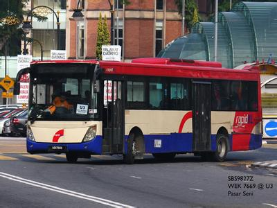
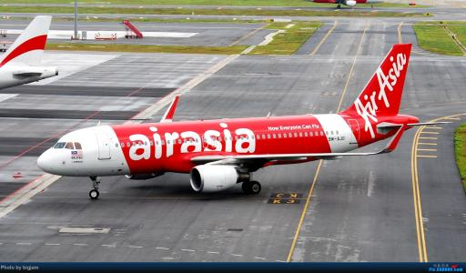
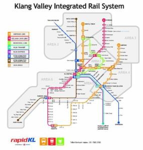

 Transportation in Kuala Lumpur is diverse and efficient, offering an extensive network of buses, light rail commuter trains, and metered taxis that charter visitors within the city centre and beyond. A busy city filled with plenty of sightseeing opportunities, Kuala Lumpur is home to state-of-the-art high rises and antiquated Chinese shops, trendy restaurants and quaint coffee shops, mega malls and street market, as well as five-star luxury hotels and backpacker enclaves.Kuala Lumpur is also notorious for its gridlocked traffic during peak hours and most travellers usually opt to travel on foot to take in the sights and sounds of downtown Kuala Lumpur. Nonetheless, first-time visitors should get to know the city’s public transportation, especially the KL’s efficient light rail transit, commuter rail, and monorail systems that connect to almost every part of Kuala Lumpur. Check out our helpful guide on how to get around Kuala Lumpur.
 AirAsia Berhad (MYX: 5099) is a Malaysian low-cost airline headquartered near Kuala Lumpur, Malaysia. It is the largest airline in Malaysia by fleet size and destinations, and Asia's largest low-cost airline by passengers carried and jet fleet. AirAsia Group operates scheduled domestic and international flights to more than 165 destinations spanning 25 countries.[4] Its main hub is klia2, the low-cost carrier terminal at Kuala Lumpur International Airport (KLIA) in Sepang, Selangor, Malaysia. Its affiliate airlines Thai AirAsia, Indonesia AirAsia, Philippines AirAsia, and AirAsia India have hubs in Don Mueang International Airport, Soekarno–Hatta International Airport, Ninoy Aquino International Airport, and Kempegowda International Airport respectively, while its sister airline, AirAsia X, focuses on long-haul routes. AirAsia's registered office is in Petaling Jaya, Selangor while its head office is at Kuala Lumpur International Airport.
AirAsia operates with the world's lowest unit cost of US$0.023 per available seat kilometre (ASK) and a passenger breakeven load factor of 52%. It has hedged 100% of its fuel requirements for the next three years, achieves an aircraft turnaround time of 25 minutes, has a crew productivity level that is better that of Malaysia Airlines, and achieves an average aircraft utilisation rate of 13 hours a day.[5] In 2007 Joshua Kurlantzick of The New York Times described the airline as a "pioneer" of low-cost travel in Asia.[6] AirAsia is the sponsor of Malaysia national football team, Singapore national football team and Queens Park Rangers. AirAsia is also a former sponsor of Manchester United and Asia Red Tour.
AirAsia has consistently been named as the world's best low cost carrier for 8 years in a row in international travel and airline awards, including the latest award for 2016.
 Malaysia's road network is one of the most comprehensive in Asia and covers a total of 144,403 kilometres (89,728 mi). The main national road network is the Malaysian Federal Roads System, which span over 49,935 km (31,028 mi). Most of the federal roads in Malaysia are 2-lane roads. In town areas, federal roads may become 4-lane roads to increase traffic capacity. Nearly all federal roads are paved with tarmac except parts of the Skudai–Pontian Highway which is paved with concrete, while parts of the Federal Highway linking Klang to Kuala Lumpur, is paved with asphalt. Malaysia has over 1,798 kilometres (1,117 mi) of highways and the longest highway, the North–South Expressway, extends over 800 kilometres (497 mi) on the West Coast of Peninsular Malaysia, connecting major urban centres like Kuala Lumpur, Penang and Johor Bahru. In 2015, the government announced a RM27 billion (US$8.23 billion) Pan-Borneo Highway project to upgrade all trunk roads to dual carriage expressways, bringing the standard of East Malaysian highways to the same level of quality of Peninsular highways.
Car rental in Kuala Lumpur is not only hassle-free, but easy on the pocket as well, and just perfect if you’re travelling with family or a group of friends. All you have to do is select a vehicle which suits your budget and preferences from the fleet of well-maintained cars and passenger vans listed below, and you’ll be cruising through Kuala Lumpur in no time.